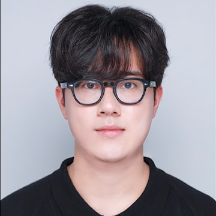

3D Vision · Robotics · AI
Youngju Na
Ph.D. Candidate, School of Computing, KAIST
I am a second-year Ph.D. student in Scalable Graphics, Vision, and Robotics (SGVR) Lab at KAIST, advised by Sung-Eui Yoon. Last summer, I was fortunate to join the Spatial AI team at NAVER LABS as a research intern (advised by Suyong Yeon). The goal of my research is to empower AI with spatial understanding by reconstructing, generating, and interacting within 3D scenes. Recently, I’ve been focusing on world models, robot vision, motion modeling, and rendering.

News
-
MoSDOT was accepted to NeurIPS 2026.
-
MorphGS was accepted to ECCV 2026.
-
GLINT was selected as a Best Paper Award Candidate at CVPR 2026 (top 1.8% of accepted papers).
-
GLINT was selected for an Oral presentation and Visual-RRT as a Highlight at CVPR 2026.
-
Two papers, GLINT and Visual-RRT, were accepted to CVPR 2026.
-
Pose-Free 3DGS via Shape-Ray Estimation received the Best Student Paper Award at ICIP 2025 (top 0.16%).
-
AegisRF was accepted to BMVC 2025.
-
Pose-Free 3DGS via Shape-Ray Estimation was accepted to ICIP 2025.
-
Joined the Spatial AI team at NAVER LABS as a research intern.
-
Received my M.S. and started my Ph.D. at KAIST, continuing in the SGVR Lab with Prof. Sung-Eui Yoon.
-
UFORecon was accepted to CVPR 2024.
-
Joined the SGVR Lab at KAIST as an M.S. student, advised by Prof. Sung-Eui Yoon.
Publications
Selected. Full list, including domestic publications, in my CV.
-
Electronics Letters 2022
Shared knowledge distillation for robust multi-scale super-resolution networks
Awards & Honors
-
2026
Best Paper Award Candidate, CVPR 2026
GLINT, Top 1.8%
-
2025
Best Student Paper Award, ICIP 2025
-
2022
1st Prize, Harvest Festival Symposium, AI/IoT Section, CNU
-
2021
2nd Prize, Silicon Valley Innovation & Startup Program, San Jose university
Education
-
Mar. 2025 – Present
Ph.D. in Computer Science, KAIST
-
Mar. 2023 – Feb. 2025
Master’s in Computer Science, KAIST
-
Mar. 2017 – Feb. 2023
B.S. in Industrial Engineering & IoT Artificial Intelligence, Chonnam National University
Top Rank (GPA: 4.36 / 4.5, Major GPA: 4.46 / 4.5)
Work Experience
-
Apr. 2025 – Oct. 2025
Research Intern, NAVER LABS
Spatial AI team · Advisor: Suyong Yeon
Teaching
Teaching Assistant, KAIST
-
Data Structure (CS206)
2024 Fall -
Computer Graphics (CS380)
2024 Spring -
Introduction to Programming (CS101)
2023 Fall -
Introduction to Algorithm (CS300)
2023 Spring
Academic Activities
-
Reviewer
CVPR · ICCV · ICLR · NeurIPS · Transactions on Computational Imaging